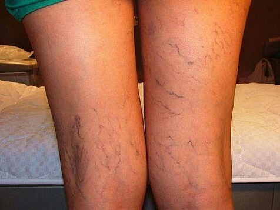
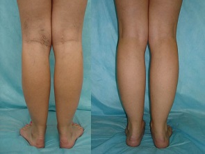

Christine Markstaller ist eine berühmte Gymnastin.
Christine Markstaller ist eine berühmte Gymnastin.
Weltmeisterin konnte den Problemen mit der Varikose innerhalb einer Woche entkommen, auf die professionelle Weise!
Man kann die Varikose behandeln, sogar wenn man Sport treibt, und sogar wenn Ihre Beine ständig gespannt werden, das weiß ich aus meiner Erfahrung. - bestätigt Christine Markstaller .
Christine Markstaller ist eine berühmte Gymnastin.
Christine Markstaller ist eine berühmte deutsche, junge Gymnastin, die schon einige Male Weltmeisterin in der Weltmeisterschaft All-around wurde. Christine stellte einen neuen Rekord auf, sie ist die jüngste Gymnastin, die sich eine Goldmedaille in der Weltmeisterschaft All-around geholt hat
- Christine, das ist dein Rekord, du bist die jüngste Gymnastin die sich eine Goldmedaille in der Weltmeisterschaft All-around geholt hat!!! Erzähl uns bitte über deine Arbeit.
– Die rhythmische Sportgymnastik ist die schönste Frauensportart. Zweifellos, es ist Riesenarbeit, man soll viel trainieren, denn jede Disziplin ist unglaublich schwer zu erfüllen. Ich kann es mir nicht leisten nach Hause zurückzukehren, wenn ich noch nicht alle Figuren durchgearbeitet habe, deren Vollzug dem Trainer nicht gefallen hat. Ich trainiere ungefähr 5-6 Stunden pro Tag.
- Christine, du trainierst sehr viel. Wann hast du die Probleme mit der Gesundheit gehabt, die mit dieser Belastung verbunden war?
- – Natürlich, beeinflusst jede Übung den Körper. Nach etwa 18 Monaten begann ich an Varikose zu leiden. Meine Beine sahen schrecklich aus! Ich will mich nicht daran erinnern! Meine Venen waren angeschwollen und blau, es tat sehr weh!
Christine treibt Gymnastik von Kindheit an (Foto: Privatarchiv)
 und dazu hat das mir für den Zeitraum geführt, wann ich Gymnastik treibe (Foto: Privatarchiv)
– Ich kann mir vorstellen, wie sehr du dich davon befreien wolltest!
– Ja, ich probierte alles, was ich fand! Teure Prozeduren und Behandlungen. Und natürlich, die Volksmedizin. Ich ließ mich sogar auf eine Operation ein, aber im Ergebnis konnte ich danach nur sehr lange kein Sport treiben.
– Wie waren die Ergebnisse?
-Keine Ergebnisse überhaupt. Zuerst war alles gut, denn die Symptome, die ich hatte, waren verschwunden, aber bald kehrten sie zurück. Manchmal wurden sie sogar noch schlechter. Leider, wusste ich mir keinen Rat - da konnte ich nicht mehr trainieren und wusste auch nicht wie ich diese Situation verbessern kann:
 Mit Kollegin und Freundin Barbara Femerling.
Mit Kollegin und Freundin Barbara Femerling.
– Und was kannst du uns über die Operation erzählen, die durchgeführt wurde?
– Was kann ich sagen... das war die beste unter den Methoden, die ich versucht hatte. Aber diese Behandlung war nicht kostenlos, es war viel zu teuer. Und natürlich, hat es viel Zeit in Anspruch genommen - ich konnte sehr lange nicht trainieren. Ich für meinen Part kann nicht so viele Trainings und Wettbewerbe ausfallen lassen. Sonst wäre meine Sportkarriere schnell zu Ende. Ich habe es einmal probiert, und Schluss! Im Großen und Ganzen, löste die Operation das Problem nicht, sie gab nur eine vorübergehende Erleichterung.
- Na, aber deine Beine zeigen mir, dass du doch eine Lösung deines Problems gefunden hast...
– Ja, meine Kollegin und beste Freundin, meine Konkurrenz, wie man sie nennt, Barbara Femerling half mir. Einmal gab sie mir ein Döschen während des Trainings und sagte: «Du brauchst eine Behandlungskur damit! Wir wollen dich hier sehen, nicht im Krankenhaus!
 Ergebnis nach der Operation (Foto zwei), Ergebnis nach der Gel (Foto drei).
Ergebnis nach der Operation (Foto zwei), Ergebnis nach der Gel (Foto drei).
– War es genug um die Varikose auszuheilen?!
– Kannst du daran glauben?! Die Gel, die mir Barbara empfohlen hat, half mir wirklich!

– Worin liegt das Geheimnis? Erkläre uns diese Methode!
–Kein Geheimnis! Das war eine Sondergel für Venenbehandlung , das ist ein Produkt japanischer Technologie, es wurde zusammen mit europäischen Medizinern entwickelt. Es heißt, dass es die sicherste Methode ist, um Varikose zu behandeln, dank der Zusammensetzung. Die Zusammensetzung ist völlig natürlich.
– Hast du wirklich alle Probleme nur mithilfe der Gel gelöst? Wie arbeitet sie?
- Ehrlich gesagt, habe ich nur ! (ride, ndr) genutzt. Diese wunderbare Gel bekämpft das Problem, stabilisiert die Blutzirkulation und senkt den Blutdruck in den Venen. Nach langen Trainings hilft mir die Gel sehr!
Ich kann mir keinen Vers darauf machen, aber für mich ist wichtig, dass dank dieser Gel ich mich von dem Problem befreit habe! Falls gewünscht kann man über dieses Produkt ausführlicher auf der Webseite des Herstellers lesen
- Christine, wie viel Zeit braucht man, um sich von diesem Problem mit den Venen zu befreien? Wie lange soll man verwenden, um das Ergebnis zu erreichen?
– Man soll es zwei Mal pro Tag verwenden: morgens und abends vor dem Schlafengehen.
Kannst du es glauben, ich habe die Verbesserung schon nach 3 Tagen Verwendung gesehen! Ödeme waren verschwunden und die Beine sahen schon besser aus! Auch nach den Trainings fühlte ich mich gut.
 Christine Markstaller
Christine Markstaller
– Also du hast schon in 3 Tagen eine Verbesserung bemerkt?
- Ja. Schon nach 2 Tagen bemerkte ich, dass die Venen auf meinen Beinen schon schwer zu sehen waren! Jetzt kann ich ruhig als Modell arbeiten!
– Wie viel Zeit hast du gebraucht, um deine Beine völlig davon zu befreien?
– Ich zählte nicht die Tage, ungefähr eine Woche. Danach verwendete ich die Gel weiter alle 3-4 Tage, denn ich hatte Angst, dass die Ergebnisse verschwinden
Aber ich irrte mich! Die Venen auf den Beinen stören mich nicht mehr. Ich habe sie vergessen und ein neues Leben begonnen! (lächelt)
 Christine Markstaller
Christine Markstaller
– Willst du noch etwas unseren Leserinnen sagen?
-Ich will sagen, dass es nicht nur die Mischung von verschiedenen Stoffen ist, die die Zusammensetzung dieser wunderbaren Gel bilden. Sie heilt alle Probleme, die mit der Varikose verbunden sind. Die Bestandteile der Zusammensetzung erarbeiteten die Entwickler mittels einzigartiger Technologien. Deswegen Vorsicht, es gibt viele Fälschungen! Es ist sehr wichtig die Gel zu kaufen, die alle Zertifikate hat: ich kaufe die Gel nur auf der offizieller Webseite des Herstellers. Das ist ein wirksames Produkt, mit Garantie.
Ich wünsche Ihnen sich zu verwirklichen, und diese schreckliche Varikose erfolgreich zu bekämpfen! Alles wird gut, man soll daran glauben! Die beste Belohnung ist sich wohl fühlen zu können. Wie schön es ist mit guter Laune aufzuwachen. Das wichtigste ist zu verstehen, dass Sie es selbst in der Hand haben, Sie können es!
Ich hoffe, dass meine Erfahrung Ihnen hilft und Ihnen die Kraft gibt, um diese Krankheit zu bekämpfen! Ich wünsche Ihnen viel Erfolg im Kampf gegen die Varikose!
2020
Kommentare
Hallo Christine, du bist ein gutes Mädchen und begabte Gymnastin! Deine Geschichte hat mich so motiviert! Ich habe dieselben Probleme mit den Venen auf beiden Beinen, aber rechtes Bein stört mich mehr: es tut mir weh von der Leiste bis dem Knie , abends ist es überhaupt untragbar. Und jedoch, wandte ich mich noch nicht zum Arzt, ich will zuerst versuchen es selbst zu behandeln . Später teile ich mit, wie es ist
Danke schön , Christine! Gestern haben ich meine Sendung bekommen. Alles in Ordnung. Jetzt beginne ich die Gel zu verwenden. Ich warte nach Ergebnisse während 5 Tage!
Sie sollen absatzlose Schuhe tragen, oder mit kleinem Absatz. Diese Probleme mit den Venen hat man wegen hochhackigen Schuhen! Sie denken nur daran, um coole Schuhe zu kaufen, danach beklagen Sie über Ihre schrecklichen Beine.
Hallo Christine! Ich habe die Gel bestellt.
Jetzt warte ich mit Ungeduld auf meine Sendung!:)
Meine Tochter brachte mir diese Gel aus Japan vor 5 Jahren, nichts Neues!
Cool! Ich habe schon bestellt und begann zu verwenden. In ein oder zwei Tagen erzähle ich über meine Ergebnisse.
Das Produkt ist nicht neu, alle wissen über diese Gel. Vor 2 Jahre hat meine Mutter Ihre Probleme mit den Venen dank dieser Gel gelöst
In den USA verwenden wir diese Gel schon während 5 Jahre! Alle meine Kollegin sehen als Hollywood-Stars aus!
Hallo zusammen... ich verwende die Gel schon 3 Tage und weiss nicht wie ich meine Dankbarkeit ausdrücken kann ! Danke schön Christine!!! Meine Beine sind sehen neu aus!
Ich verwende die Gel nur 4 Tage und ich sehe schon die Ergebnisse! Jetzt sehen meine Beine schöner aus! Ich bin glücklich!
Ich habe die Gel gekauft, und schwärme dafür! Nur nach einer Woche wurde alles schon viel besser. Wer hätte das je gedacht, natürlich wartete ich nicht darauf...mit Rücksicht auf deren Preis, das ist einfach ein Geschenk.
Christine, ich wusste schon über diese Gel, denn ich die in China seit langem gekauft habe. Probleme mit den Venen verschwinden einfach, Cool, nicht wahr? Ich empfehle es! Für alle!
Mein Mann ist einfach entzückt! Er sagt, ich solle am Wettbewerb "Miß Schöne Beine" teilnehmen, lol
arbeitet, ich habe auf offizieller Webseite ohne Vorauszahlung bestellt , und die Sendung während 6 Tage bekommen. Nach einer Woche sind die Venen einfach verschwunden.
Ich bin nicht die einzige! Ich habe mich von den Problemen mit den Beinen nur für eine Woche befreit. Ich kann daran nicht glauben :-D
Jetzt tun mir die Beine nicht weh und sehen sehr schön aus!! Super! Ich empfehle es allen Mädchen!
Ich weiss darüber auch . Meine Tante beklagt sich über ihre Beine nicht mehr (-;
Hallo! Diese Gel ist die beste, ich wartete nur eine Woche um sich von dem Problem zu befreien .
Es ist eine Bombe! Meine Beine sind jetzt gesund und schön! Übrigens, habe ich die Sendung nach 3 Tagen bekommen.
Guten Morgen, Damen! Meine Frau hat diese Gel gekauft und jetzt sind ihre Beine einfach ideal! Ich kann nicht in Worten ausdrücken wie glücklich ich bin! Ich empfehle es!
Nichts Neues ! Jede Frau weiss über diese Gel: wer nicht weiss, will sich nicht von dieser Krankheit befreien.
Danke schön für diesen Artikel. Christine du bist die beste ! Ich hoffe, dass deine Karriere erfolgreich wird! Jetzt werde ich die Gel bestellen .
Es ist genau das, was ich wollte! Alle werden beneiden!
In China verwenden alle diese Gel und es arbeitet ausgezeichnet! Wie immer erfahren wir alles zu allerletzt, warten immer jahrhundertelang um das Produkt zu bekommen...